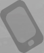
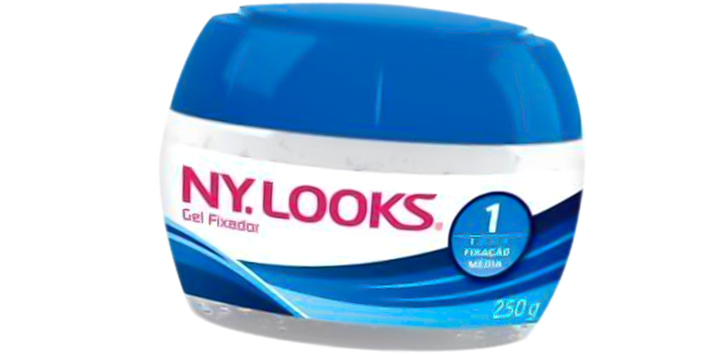

Gel Fixador
Fixação Média 1
Cabelos arrumados e bem cuidados! É isso que o Gel Fixador Ny.
Looks Fixação Média 1 oferece para homens que não descuidam do
visual, mas querem uma aparência bem natual.